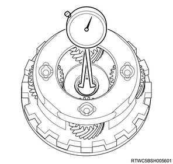
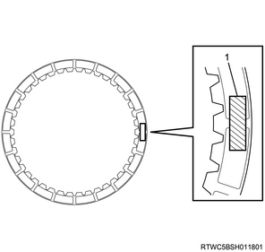
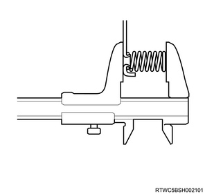

Transmission assembly inspection (TB-50LS)
1. 1way clutch assembly No.1 inspection
1. Inspect the 1way clutch assembly No.1.
Note
- Hold the 1way clutch inner race sub-assembly place.
- Check that the 1way clutch assembly No.1 rotates when turned counterclockwise and does not rotate when turned clockwise.
- Free
- Lock
2. 1way clutch assembly No.2 inspection
1. Inspect the 1way clutch assembly No.2.
Note
- Hold the reverse clutch hub sub-assembly in place.
- Check that the 1way clutch assembly No.2 rotates when turned clockwise and does not rotate when turned counterclockwise.
- Lock
- Free
3. 1way clutch assembly No.3 inspection
1. Inspect the 1way clutch assembly No.3.
Note
- Hold the 1way clutch assembly No.3 in place.
- Check that the 1way clutch inner race sub-assembly rotates when turned clockwise and does not rotate when turned counterclockwise.
- Lock
- Free
4. Front planetary gear assembly inspection
1. Inspect the front planetary gear assembly.
Note
- Using a dial indicator, measure the inside diameter of the front planetary gear assembly bush.
- Measure the inside diameter at different places and take an average.
- If the measurement is greater than the maximum, replace the front planetary gear assembly with a new one.
- When the front planetary gear assembly is replaced, inspect the contact surface opposed to the reverse clutch hub sub-assembly.
- If the surface is scratched or discolored, replace the reverse clutch hub sub-assembly with a new one.
Standard： 57.405 to 57.430 mm { 2.2600 to 2.2610 in }
5. Rear planetary gear assembly inspection
1. Inspect the rear planetary gear assembly.
Note
- Using a dial indicator, measure the inside diameter of the rear planetary gear assembly bush.
- Measure the inside diameter at different places and take an average.
- If the measurement is greater than the maximum, replace the rear planetary gear assembly with a new one.
- If the surface is scratched or discolored, replace the intermediate shaft with a new one.
- When the rear planetary gear assembly is replaced, inspect the contact surface opposed to the intermediate shaft.
Standard： 20.000 to 20.025 mm { 0.7874 to 0.7884 in }

6. Brake disc No.1 inspection
1. Inspect the brake disc No.1.
Note
- Check the lining of all discs.
- If the lining is flaking or has discolored, or if it is worn or the print mark is wearing away, replace with a new discs.
- When replacing, check the contact surfaces between the flange, plate and disc.
- If they are scratched or have discolored, replace with new parts.
- Before replacing with new discs, soak them at least 2 hours in ATF.

7. Brake disc No.2 inspection
1. Inspect the brake disc No.2.
Note
- Check the lining of all discs.
- If the lining is flaking or discolored, or if it is worn or the print mark is wearing away, replace the discs with a new one.
- When replacing, check the contact surfaces between the disc, plate and flange.
- If they are scratched or discolored, replace the discs and plates and flanges with new ones.
- Before replacing with new discs, soak them in ATF at least 2 hours.
8. Brake disc No.3 inspection
1. Inspect the brake disc No.3.
Note
- Check the lining of all discs.
- If the lining is flaking or discolored, or if it is worn or the print mark is wearing away, replace the discs with a new one.
- When replacing, check the contact surfaces between the disc, plate, flange and cushion plate.
- If they are scratched or discolored, replace the discs, plates, flange and cushion plate with new ones.
- Before replacing with new discs, soak them in ATF at least 2 hours.
9. Brake disc No.4 inspection
1. Inspect the brake disc No.4.
Note
- Check the lining of all discs.
- If the lining is flaking or discolored, or if it is worn or the print mark is wearing away, replace the discs with a new one.
- When replacing, check the contact surfaces between the disc, plate and flange.
- If they are scratched or discolored, replace the discs, plates and flanges with new parts.
- Before replacing with new discs, soak them in ATF at least 2 hours.
10. 1st and reverse brake return spring sub-assembly inspection
1. Inspect the 1st and reverse brake return spring sub-assembly.
Note
- Using vernier calipers, measure the free length of the 1st and reverse brake return spring sub-assembly.
- If the free length is smaller than the minimum, replace the 1st and reverse brake return spring sub-assembly.
Standard： 23.74 mm { 0.9346 in }
11. Brake piston return spring sub-assembly inspection
1. Inspect the brake piston return spring sub-assembly.
Note
- Using vernier calipers, measure the free length of the brake piston return spring sub-assembly.
- If the free length is smaller than the minimum, replace the brake piston return spring sub-assembly.
Standard： 17.05 mm { 0.67 in }

12. Brake piston return spring sub-assembly No.2 inspection
1. Inspect the brake piston return spring sub-assembly No.2.
Note
- Using vernier calipers, measure the free length of the brake piston return spring sub-assembly No.2.
- If the free length is smaller than the minimum, replace the brake piston return spring sub-assembly No.2.
- 4JJ1
Standard： 22.66 mm { 0.8921 in }
Note
- 4JK1
Standard： 17.45 mm { 0.6870 in }
13. Engine harness inspection
1. Disconnect the engine harness from the TCM.
2. Measure a resistance using tester.
Note
- Measure the resistance between each connector terminal combinations listed in the table.
- Check that resistances are as specified in the table.
Caution
- Do not damage the terminals.
| ATF temperature | Resistance |
| ： -40 ℃ { -40 °F } | ： 161 kΩ |
| ： -30 ℃ { -22 °F } | ： 36.3 to 52.1 kΩ |
| ： 10 ℃ { 50 °F } | 5.626 - 7.303 kΩ |
| ： 25 ℃ { 77 °F } | ： 3.5 kΩ |
| ： 110 ℃ { 230 °F } | 0.224 - 0.271 kΩ |
| ： 145 ℃ { 293 °F } | 0.102 - 0.121 kΩ |
| ： 150 ℃ { 302 °F } | 0.087 kΩ MIN |

- OT1G
- OT1
- OT2G
- OT2
3. Inspect continuity using tester.
Note
- Check for continuity between each connector terminal combinations listed in the table.
- Check that continuity is as specified in the table.
Caution
- Do not damage the terminals.
| Terminal name | Continuity |
| OT1G - Body earth | No |
| OT1 - Body earth | |
| OT2G - Body earth | |
| OT2 - Body earth | |
| at 20 ℃ {68 °F} | |
- OT1G
- OT1
- OT2G
- OT2
14. Transmission internal harness inspection
1. Inspect the TFT sensor.
Note
- Warm up ATF and insert the transmission fluid temperature sensor.
- ATF
2. Measure a resistance using tester.
Note
- At each ATF temperature measure the resistance between terminal OT1 and OT1G, OT2 and OT2G of the transmission internal harness connector.
- Check that continuity is as specified in the table.
Caution
- Do not damage the terminals.
| ATF temperature | Resistance |
| ： -40 ℃ { -40 °F } | ： 161 kΩ |
| ： -30 ℃ { -22 °F } | ： 36.3 to 52.1 kΩ |
| ： 10 ℃ { 50 °F } | ： 5.626 to 7.303 kΩ |
| ： 25 ℃ { 77 °F } | ： 3.5 kΩ |
| ： 110 ℃ { 230 °F } | ： 0.224 to 0.271 kΩ |
| ： 145 ℃ { 293 °F } | ： 0.102 to 0.121 kΩ |
| ： 150 ℃ { 302 °F } | ： 0.087 kΩ |
- OT1G
- OT1
- OT2G
- OT2
3. Inspect continuity using tester.
Note
- Check for continuity between each connector terminal combinations listed in the table.
- Check that continuity is as specified in the table.
Caution
- Do not damage the terminals.
| Terminal name | Continuity |
| OT1G - Body earth | No |
| OT1 - Body earth | |
| OT2G - Body earth | |
| OT2 - Body earth | |
| at 20 ℃ {68 °F} | |
- OT1G
- OT1
- OT2G
- OT2